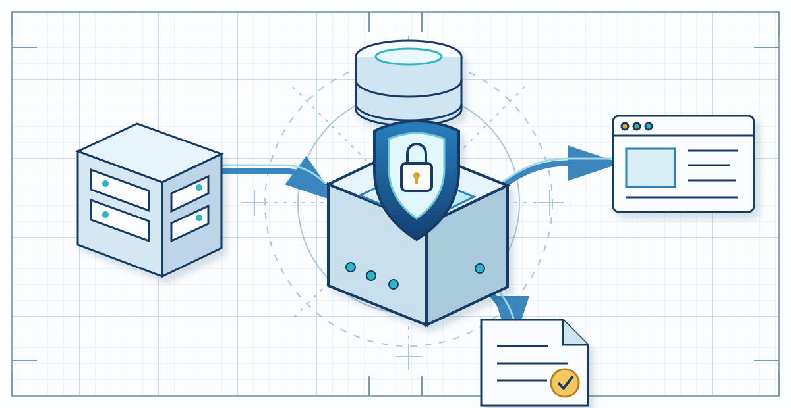
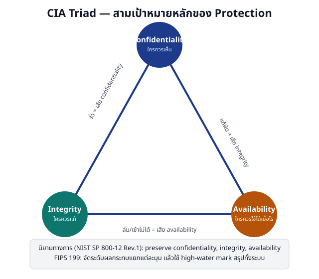

NU 305331 / Week 01 / §0 ภาษากลางสำหรับการวิเคราะห์ความมั่นคงปลอดภัย
นิยาม ขอบเขต สินทรัพย์ และเป้าหมายการปกป้อง

NU 305331 / Week 01 / §0 ภาษากลางสำหรับการวิเคราะห์ความมั่นคงปลอดภัย
Security มีสามมุมมองที่ใช้ร่วมกัน
คุณสมบัติของระบบ
ทำงานอย่างปลอดภัยและเชื่อถือได้
บริการและกลไก
กำหนดสิ่งที่ต้องปกป้องและวิธีปกป้อง
การบริหารความเสี่ยง
หลีกเลี่ยงความสูญเสียที่ยอมรับไม่ได้
NU 305331 / Week 01 / §0 ภาษากลางสำหรับการวิเคราะห์ความมั่นคงปลอดภัย
ผลการเรียนรู้ของบทครอบคลุมสี่ความสามารถ
นิยามและขอบเขต
อธิบาย Security และสามขอบเขต
สินทรัพย์และข้อมูล
จำแนกสินทรัพย์และระดับชั้นข้อมูล
เป้าหมายการปกป้อง
ใช้ CIA และเป้าหมายส่วนขยาย
วงจรชีวิต
เชื่อม Design, Build, Operate, Assess, Communicate
NU 305331 / Week 01 / §0 ภาษากลางสำหรับการวิเคราะห์ความมั่นคงปลอดภัย
Student Project Portal ทำให้แนวคิดเชื่อมเป็นระบบเดียว
NU 305331 / Week 01 / §1 นิยามและขอบเขต
สามขอบเขตทับซ้อนกัน แต่เน้นคนละสิ่ง
Information Security
สารสนเทศทุกรูปแบบ รวมคนและกระบวนการ
Cybersecurity
สินทรัพย์ที่เชื่อมโยงหรือพึ่งพาไซเบอร์สเปซ
Computer Security
ระบบคอมพิวเตอร์และสารสนเทศที่ประมวลผล
NU 305331 / Week 01 / §1 นิยามและขอบเขต
บริบทเป็นตัวกำหนดว่าขอบเขตใดเด่นที่สุด
สัญญากระดาษถูกทิ้งโดยไม่ทำลาย
Information Security
เว็บไซต์ถูก DDoS จนใช้งานไม่ได้
Cybersecurity
มัลแวร์เข้าเครื่องที่ไม่ต่ออินเทอร์เน็ต
Computer Security
NU 305331 / Week 01 / §1 นิยามและขอบเขต
คำพื้นฐานหกคำต้องเชื่อมกัน ไม่ใช่ใช้แทนกัน
Asset
สิ่งที่มีคุณค่า
Threat
เหตุหรือการกระทำที่อาจก่อความเสียหาย
Vulnerability
เงื่อนไขอ่อนแอ
Control
มาตรการลดความเสี่ยง
Impact
ความเสียหายเมื่อเหตุสำเร็จ
Risk
โอกาสเกิดร่วมกับผลกระทบในบริบท
NU 305331 / Week 01 / §1 นิยามและขอบเขต
Risk chain แสดงเหตุผลตั้งแต่คุณค่าถึงความเสียหาย
NU 305331 / Week 01 / §1 นิยามและขอบเขต
Risk statement ที่ดีระบุเหตุ เงื่อนไข และผลกระทบ
ในสภาพแวดล้อมทดสอบที่ได้รับอนุญาต ผู้ใช้ที่ผ่านการยืนยันตัวตนอาจดาวน์โหลดไฟล์ของผู้อื่น เพราะระบบไม่ตรวจ Object-level Authorization ส่งผลให้ข้อมูลโครงงานถูกเปิดเผย
NU 305331 / Week 01 / §1 นิยามและขอบเขต
การทดสอบอย่างรับผิดชอบยึดขอบเขตและหลักฐานเท่าที่จำเป็น
หยุด
เมื่อเป้าหมายหรือวิธีเกินขอบเขตที่อนุญาต
บันทึก
เฉพาะหลักฐานที่จำเป็นต่อข้อค้นพบ
รายงาน
ผ่านช่องทางที่เจ้าของระบบกำหนด
NU 305331 / Week 01 / §2 สินทรัพย์และการจำแนกชั้นข้อมูล
สินทรัพย์หลักบอกคุณค่า สินทรัพย์สนับสนุนทำให้คุณค่านั้นดำรงอยู่
Primary Assets
- ไฟล์โครงงาน
- คะแนน
- กระบวนการประเมิน
Supporting Assets
- เว็บ
- API
- ฐานข้อมูล
- ที่เก็บไฟล์
- การตั้งค่า
- Audit Log
NU 305331 / Week 01 / §2 สินทรัพย์และการจำแนกชั้นข้อมูล
สี่ระดับข้อมูลช่วยเลือกการจัดการที่ได้สัดส่วน
Public
ประกาศที่เปิดเผยได้
Internal
ข้อมูลใช้เฉพาะผู้เกี่ยวข้อง
Confidential
ข้อมูลที่การรั่วไหลก่อความเสียหาย
Highly Restricted
Credential, Private Key หรือข้อมูลผลกระทบร้ายแรง
NU 305331 / Week 01 / §2 สินทรัพย์และการจำแนกชั้นข้อมูล
Classification มีความหมายเมื่อเปลี่ยนวิธีจัดการ
NU 305331 / Week 01 / §2 สินทรัพย์และการจำแนกชั้นข้อมูล
ข้อมูลในระบบเดียวกันอาจต้องการการคุ้มครองต่างกัน
เกณฑ์การส่งโครงงาน
ตรวจความถูกต้องก่อนเผยแพร่
รายชื่อนิสิต
จำกัดเฉพาะผู้เกี่ยวข้อง
ไฟล์ร่างและข้อเสนอแนะ
จำกัดตามบทบาทและเข้ารหัสระหว่างส่ง
Private Key และ Credential
ใช้ระบบจัดการความลับและจำกัดผู้รับผิดชอบ
NU 305331 / Week 01 / §3 เป้าหมายการปกป้อง
CIA Triad เป็นเลนส์แรกสำหรับอ่านผลกระทบ

NU 305331 / Week 01 / §3 เป้าหมายการปกป้อง
เหตุการณ์เดียวอาจกระทบ CIA มากกว่าหนึ่งด้าน
ไฟล์ของนิสิตถูกเปิดเผย
Confidentiality
คะแนนถูกแก้โดยไม่มีสิทธิ์
Integrity
ระบบส่งงานใช้ไม่ได้ก่อนเส้นตาย
Availability
NU 305331 / Week 01 / §3 เป้าหมายการปกป้อง
เป้าหมายส่วนขยายตอบคำถามที่ CIA ยังไม่ละเอียดพอ
Authenticity
แหล่งที่มาหรือตัวตนเป็นของจริง
Accountability
การกระทำเชื่อมโยงกลับไปยังผู้รับผิดชอบได้
Non-repudiation
มีหลักฐานว่าผู้ส่งหรือผู้รับไม่อาจปฏิเสธการกระทำ
NU 305331 / Week 01 / §3 เป้าหมายการปกป้อง
Authentication และ Authorization ตอบคนละคำถาม
Authentication
- ผู้ใช้นี้เป็นใคร?
Authorization
- ผู้ใช้นี้ทำอะไรกับทรัพยากรใดได้?
NU 305331 / Week 01 / §3 เป้าหมายการปกป้อง
Integrity และ Authenticity ต้องวิเคราะห์แยกกัน
Integrity
- ข้อมูลไม่ถูกแก้ไขโดยมิชอบ
Authenticity
- แหล่งที่มาหรือตัวตนเป็นของจริง
NU 305331 / Week 01 / §3 เป้าหมายการปกป้อง
หลักฐานต้องแยก “ส่งคำขอ” ออกจาก “เปลี่ยนสถานะสำเร็จ”
คำขอ
บอกสิ่งที่ผู้ใช้พยายามทำ
คำตอบ
บอกว่าระบบยอมรับหรือปฏิเสธ
สถานะ
ยืนยันว่าข้อมูลเปลี่ยนจริงหรือไม่
บันทึก
ช่วยตรวจสอบผู้กระทำและเงื่อนไข
NU 305331 / Week 01 / §4 กิจกรรมความมั่นคงปลอดภัยตลอดวงจรชีวิต
Security ไม่ใช่การสแกนครั้งสุดท้ายหลังสร้างระบบเสร็จ
Design
กำหนดบทบาท ข้อกำหนด และ Trust Boundary
Build
เขียนโค้ดและตั้งค่าอย่างปลอดภัย
Operate
ดูแลระบบ ความลับ และ Audit Log
Assess
ตรวจสอบและประเมินภายในขอบเขต
Communicate
รายงานหลักฐาน ข้อจำกัด และความเสี่ยง
NU 305331 / Week 01 / §4 กิจกรรมความมั่นคงปลอดภัยตลอดวงจรชีวิต
ระบบเดียวต้องได้รับการปกป้องครบทั้งห้ามิติ
Design
ออกแบบสิทธิ์ดาวน์โหลดและ Data Flow
Build
ตรวจ Object-level Authorization ฝั่งเซิร์ฟเวอร์
Operate
เปิด TLS และเก็บ Audit Log ที่เหมาะสม
Assess
ตรวจพฤติกรรมอนุญาตและปฏิเสธ
Communicate
อธิบายข้อค้นพบและข้อจำกัด
NU 305331 / Week 01 / §5 สังเคราะห์และทบทวน
การวิเคราะห์ที่ครบถ้วนเชื่อมคุณค่า เป้าหมาย และวงจรชีวิต
NU 305331 / Week 01 / §5 สังเคราะห์และทบทวน
อ่านสถานการณ์หนึ่งด้วยกรอบทั้งบท
ผู้ใช้บัญชีจริงส่งคำขอแก้คะแนนของผู้อื่น:
- สินทรัพย์ใดได้รับผลกระทบ
- ข้อมูลอยู่ระดับใด
- Authentication และ Authorization ให้คำตอบอะไร
- CIA และเป้าหมายส่วนขยายใดเกี่ยวข้อง
- หลักฐานใดยืนยันผลลัพธ์
NU 305331 / Week 01 / §5 สังเคราะห์และทบทวน
คำถามทบทวนสี่ข้อครอบคลุมทั้งบท
ขอบเขต
อธิบายความต่างของ Computer, Cyber และ Information Security
สินทรัพย์และข้อมูล
จำแนก Primary, Supporting และสี่ระดับข้อมูล
เป้าหมาย
แยก CIA, Authenticity, Accountability และ Non-repudiation
วงจรชีวิต
ยกตัวอย่าง Design, Build, Operate, Assess, Communicate